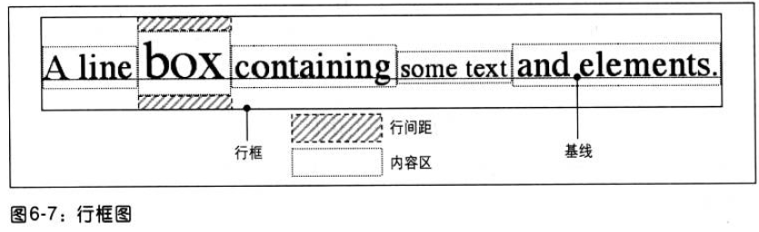

1.缩进:
text-indent(应用于块级元素，可继承)
2.水平对齐:
text-align: justify(两端对齐：无法处理连字符)
3.垂直对齐:
line-height: 文本行基线之间的距离，可继承
行间距: line-height值与字体大小之差
内容区 -> 行内框 -> line-height影响行内框

4.垂直对齐文本: 行内元素/替换元素
百分数值(相对于line-height)/长度/baseline/sub(相对于父元素基线降低)/super(相对于父元素基线升高)/bottom(行内框对齐行框)/text-bottom(行内框底端对齐文本框底端)/middle(行内元素框中点对齐父元素基线上方0.5ex)/top/text-top
表单元格(baseline/top/middle/bottom)
5.字间隔
word-spcing: 有继承
6.字母间隔
letter-spacing
7.文本行转换
text-transform: uppercase/lowercase/capitalize/none/inderit，有继承性
8.文本装饰
text-decortaion: 无继承，只是“经过”，可以覆盖
9.文本阴影
text-shadow
10.处理空白符
white-space: normal(空白符合并为一个空格)/nowrap(房置换行，除非使用<br>)/pre(保留空格)/pre-wrap(保留空白符序列，正常换行)/pre-line(合并空白符，保留换行符)/inherit
11.文本方向
direction: ltr/rtl
行内元素: 需要添加unicode-bidi(打开附加嵌套层): embed/bidi-override
123112321312313